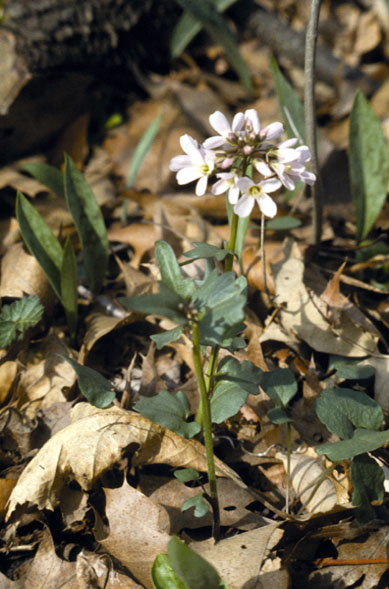

Cardamine doulassii
Family: Brassicaceae
Purple Spring Cress
Swink/Wilhelm #7
FLOWERING: April to Mid-May
SEED TIMING: Early June
HABITAT: Wet, mesic woodland
DIAGNOSTIC FEATURES: 6 to 12 inches tall. Long-stalked, fan-shaped, spicy basal leaves. 4 to 5 toothed, sessile or stalkless elliptical stem leaves. Pale magenta blossom clusters each flower having 4 petals.
TO PICK: A typical mustard with long, narrow pods called a silique that are nearly erect, 1 inch long and pointed at both ends.